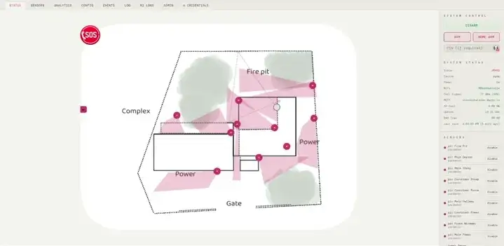

Marine Biologist • Problem solver • Data Scientist
As a marine biologist and quantitative analyst based in South Africa, my work is driven by a deep curiosity for complex systems and a stubborn persistence when tackling technical roadblocks. Having completed an M.Sc. with Distinction at the University of Cape Town, I developed a broad technical skillset that spans high-dimensional statistical modeling, insight generation and scientific reporting.
Driven by the challenge of parsing complex systems, automating workflows and generating actionable analyses.

Whether collaborating with international delegates during the trans-Pacific One Ocean Expedition or building hands-off tools to process thousands of chaotic records, I thrive in self-directed environments that require cross-disciplinary teamwork and analytical rigor. I don't back down from unstructured, messy data; instead, I view these challenges as opportunities to design clean, automated solutions that maximize the value of every project.
Maximizing value and quality across analyses